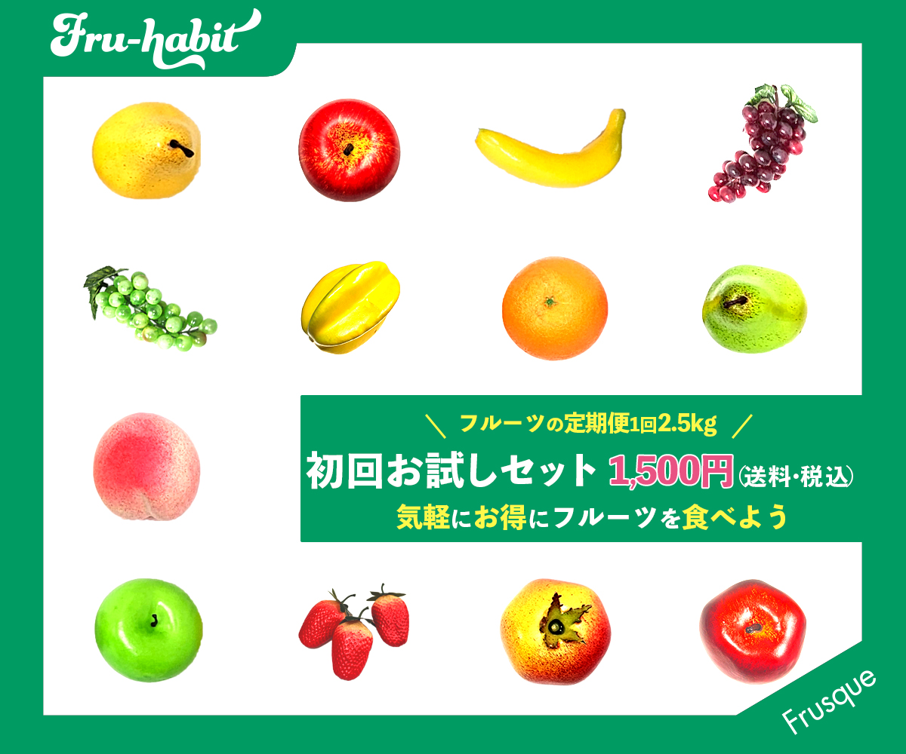
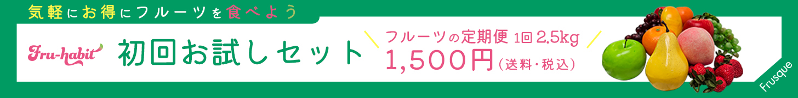
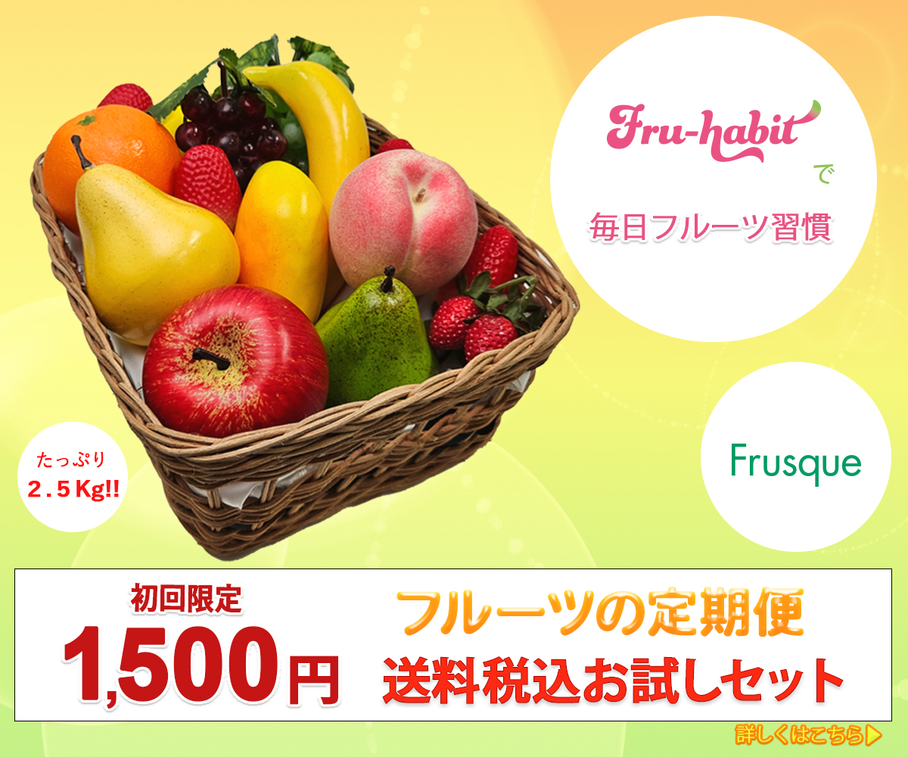
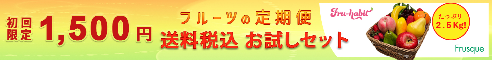
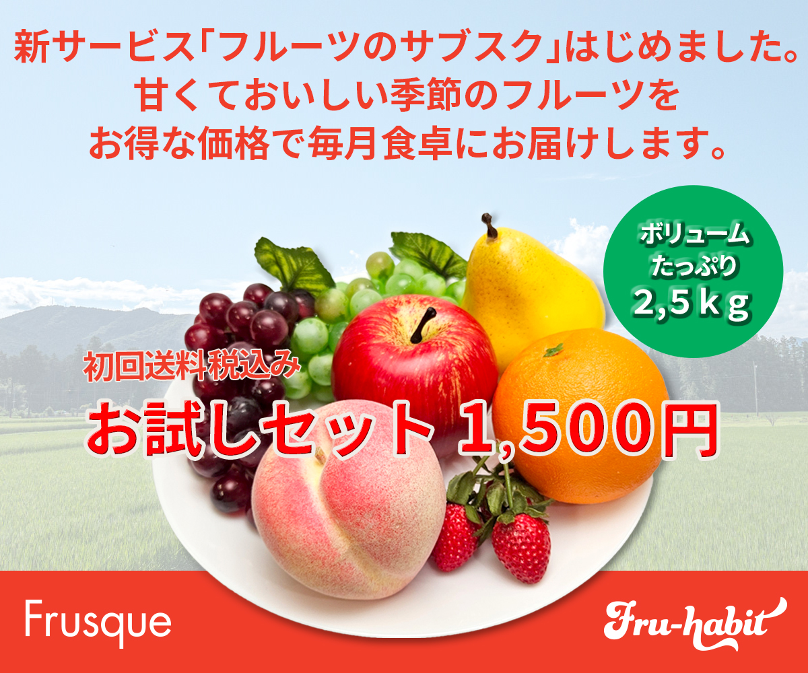
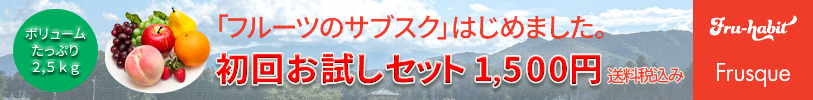

デザイン1


制作期間
1日
デザイン
ポップなカラーと字体使いで女性の目を引くよう作成しました。コーポレートカラーのグリーンと、サービスイメージカラーのピンクを多く取り入れ、たとえクリックされなかったとしても、企業とサービスを印象付ける効果を狙っています。
デザイン2


制作期間
1日
デザイン
ビタミンカラーを使用し、フルーツからとれるビタミンで元気になるイメージを表現しました。ビタミンカラーは視認性も高いため、ほかのバナーと並んだ際にも目を引くことができるメリットも考慮しています。キャンペーンのお得さをアピールすることに重点を置き、アイキャッチに金額を大きく記載しました。「何がどうお得なのか詳しく知りたい」と興味を引き、クリックしてもらうよう誘導しています。文言で2.5㎏のボリュームと具体的に数字を示すことで、2.5kgのフルーツが1500円というお得さが伝わるデザインにしました。
デザイン3


制作期間
1日
デザイン
背景に農作地を連想させる青空と山並みの風景写真を使うことで、アットホームな雰囲気を伝えるデザインにしました。クライアントからの風景写真を使ったデザインも見たいという要望に応えました。肥沃な大地で作られた甘くておいしいフルーツを、毎日の食卓へお届けするというコンセプトです。キャッチコピーはスタートアップのサービスであることを前面に伝え、興味を引きクリックを促す導線にしています。
課題概要
フルーツのサブスクを新規展開する、フルスク社の『フルハビ』という架空サービスのバナーを学校課題で制作しました。指示書 グループワークにて素材の果物をスチール撮影し、その写真をPhotoshopで加工した上で、バナーに使用しています。
【制作サイズ】
ミディアムレクタングルサイズ（300×250px）
リーダーボードサイズ（728×90px）
ユーザーターゲット
1都3県に住む30代中頃の女性。子供のいない夫婦（DINKS）を想定。共働きで世帯年収600～1000万。美容や健康への意識が高い。将来の為に節約をしている。フルーツは好きだが重く買いに行く手間が面倒だと感じている。フルーツの価格の高さもネックとなっており、フルーツを食べるのは週に1、2回程度。いつも同じスーパーで購入するので、フルーツのバリエーションが少なく飽きてしまっている。また、スーパーでは買えないようなおいしいフルーツを食べたいとの潜在意識がある。